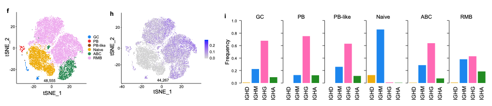

In this study, we examined B cells sampled from the blood (PBMC) and the lymph node (FNA) after flu vaccination.
First, based on gene expression, we clustered the sampled cells (top) and identified the B cells based on expression of their marker genes (bottom).

Amongst the B cells, we further clustered them into subpopulations (left), and verified that their antibody mutation frequencies (center) and isotype distributions (right) conformed to expectations.

Upon clonal lineage analysis, we found that a portion of the B cell response was shared between the blood compartment (PB) and the germinal center (GC) in the lymph node. This sharing is visualized by the purple chords below.
Importantly, we were able to track the B cells responding to the flu vaccine both over time and across different subpopulations.
Here is a close-up of the lineage structures of two B cell clones that responded to the flu vaccine.